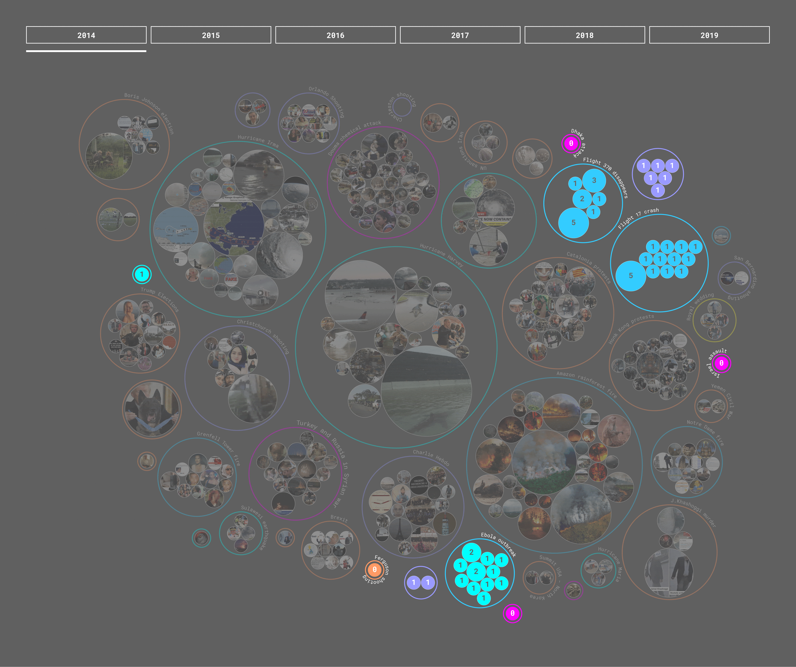
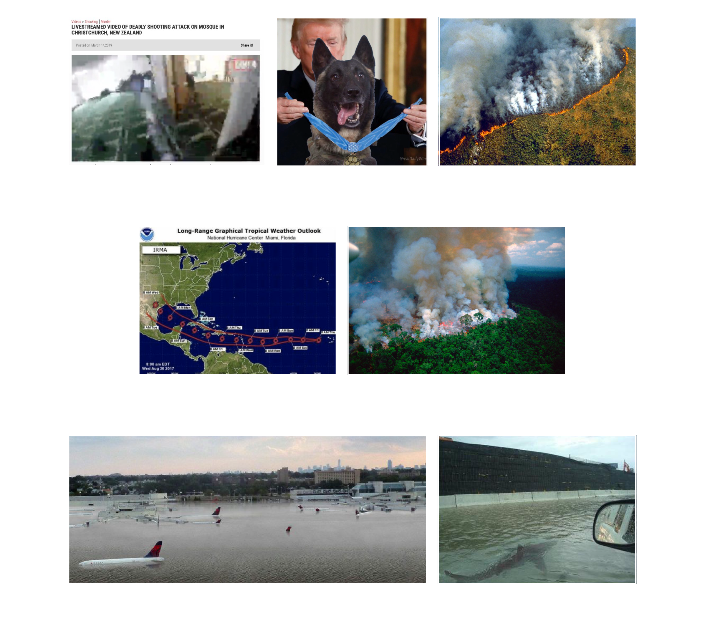
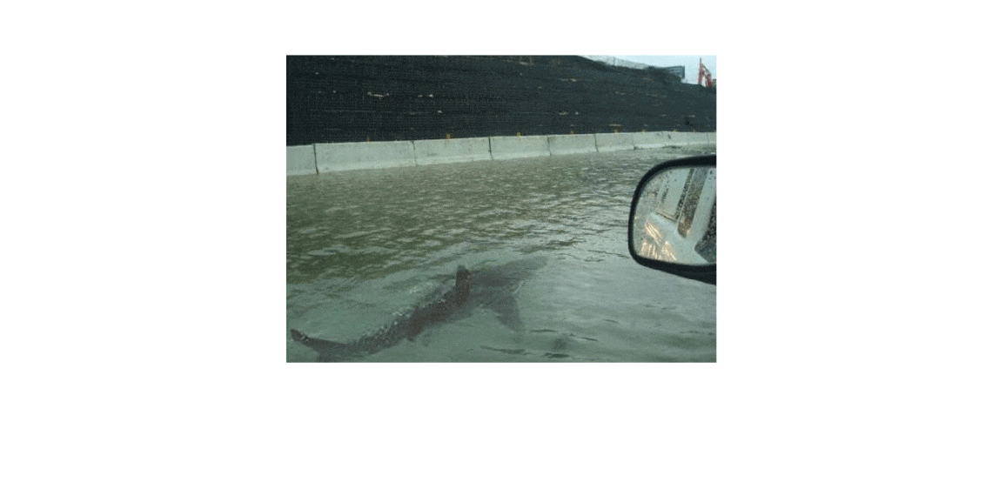

Medical tourism refers to people traveling abroad to obtain medical treatment. You might know this kind of tourism already, but what if you could know where to go in order to get a specific trend? We analyze a couple hundred posts with the #medicaltourism Instagram hashtag in order to map locations that offer specific treatments around the world. Interested? Try out our map.
Among the relevant events, those with no debunked false images - such as Ferguson Shooting, Palestinian Refugees in Syria, Israel Assault and others - are fewer in number than those with false images declared fake.
The number of debunked images has significantly increased through the years. In 2014 there are 31 images officially declared false, while in 2019 there are 82. In addition, 2019 was the year in which individual images were debunked more times than in any other year.
Most images have been debunked less than 16 times: this is the starting point for an exponential increase of the debunking phenomenon. Only 7 photos exceed this threshold: therefore only in rare cases many sites were active in declaring false the same image en masse.
The image declared false the most (45 times) is the one representing a shark on a highway linked to the Hurricane Harvey catastrophe, which is also one of the most absurd photos.
